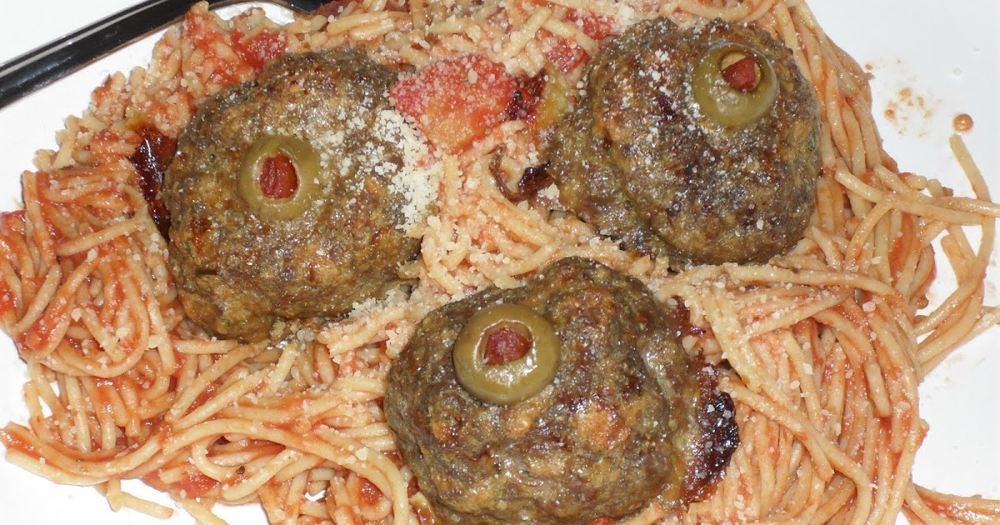

Spaghetti

My Fantastic Spaghetti
"This cherished recipe has been passed down through the generations from my mother and holds a special place in our family's heart. It has become a beloved tradition, one that never fails to bring smiles to our faces around the dinner table. My family absolutely adores it, and it has become a go-to favorite that I can’t imagine ever being replaced. The flavors are so rich and comforting, and it’s always a big hit, especially with my husband—he can't get enough of it! This dish is versatile and can be served over any type of hot, cooked pasta, making it a perfect meal for any occasion, whether it’s a casual weeknight dinner or a special gathering. It’s a recipe that has stood the test of time and continues to bring joy to our family, and I’m sure it will become a staple in your kitchen too."
Ingredients
- Ground beef
- White onion
- Garlic
- Green bell pepper
- Canned tomatos
- Can of tomato sauce
- Tomato paste
- Oregano
- Basil
- Salt
- Black pepper
Instructions
- Gather ingredients
- Combine ground beef, onion, garlic, and green pepper in a large saucepan over medium-high heat. Cook and stir until meat is browned and crumbly and vegetables are tender, 5 to 7 minutes. Drain grease.
- Stir diced tomatoes, tomato sauce, and tomato paste into the pan. Season with oregano, basil, salt, and pepper. Simmer spaghetti sauce for 1 hour, stirring occasionally.
- Boil noodles in salted water
- Once the noodles reach an aldente texture, drain noodles
- Combine noodles with sauce then enjoy